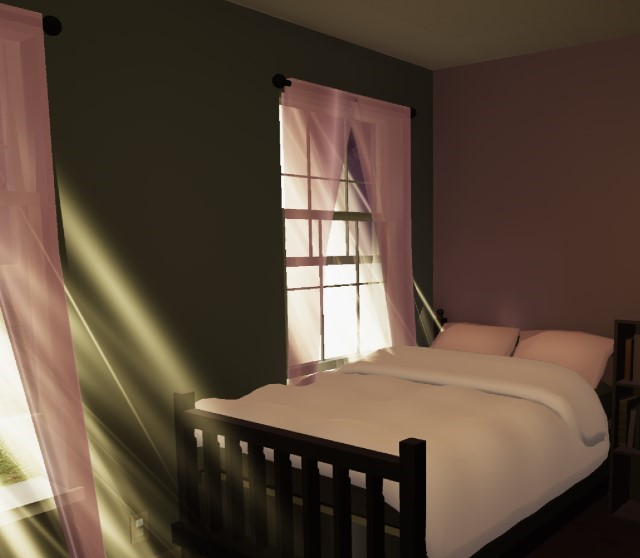
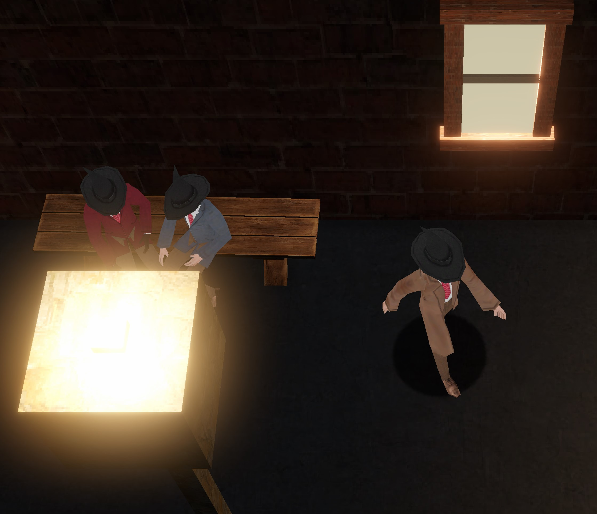
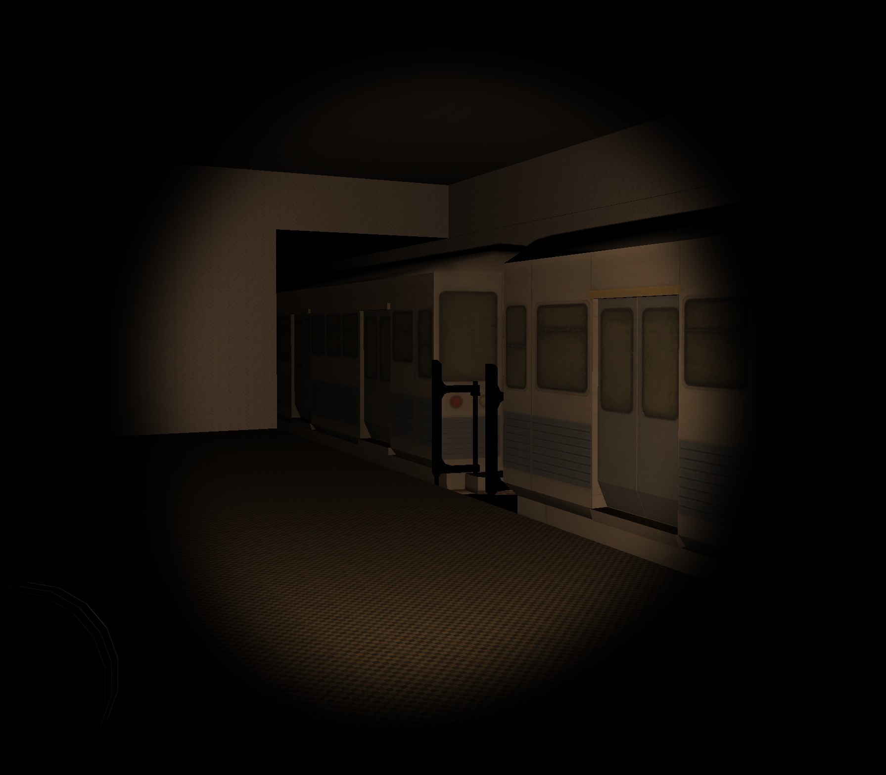
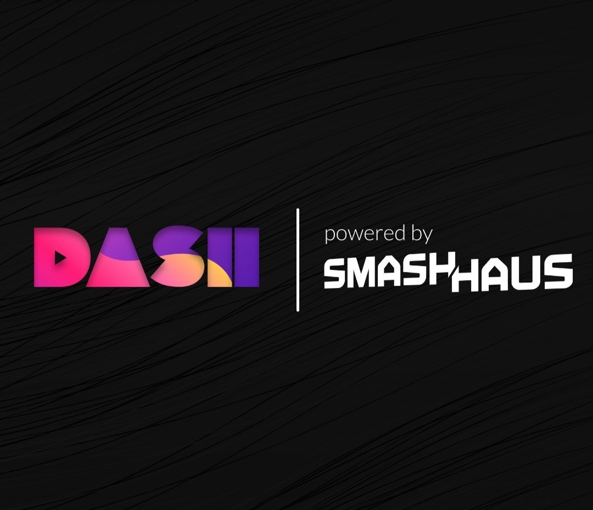

May and November
My first game ever, May and November is a short psychological horror experience where a parent cleans out the bedroom of their deceased child. The game focuses on sound and atmosphere, and takes around 10 minutes to complete. Music by me.
Blackwater Detective
This is a class project made by me and four other students. Sound design by me. Music by Bad Angels.
Level Design
This was my first Unity Project. It's a basic design for a subway station with a dark theme.
Soundcloud Radio
The show has been taken off of Soundcloud, but this is the radio show I made during my internship at SmashHaus music. I sourced all songs, spliced together voiceovers with music, and mixed for final presentation.